9月12日STl图纸文件分享
提取码
x27r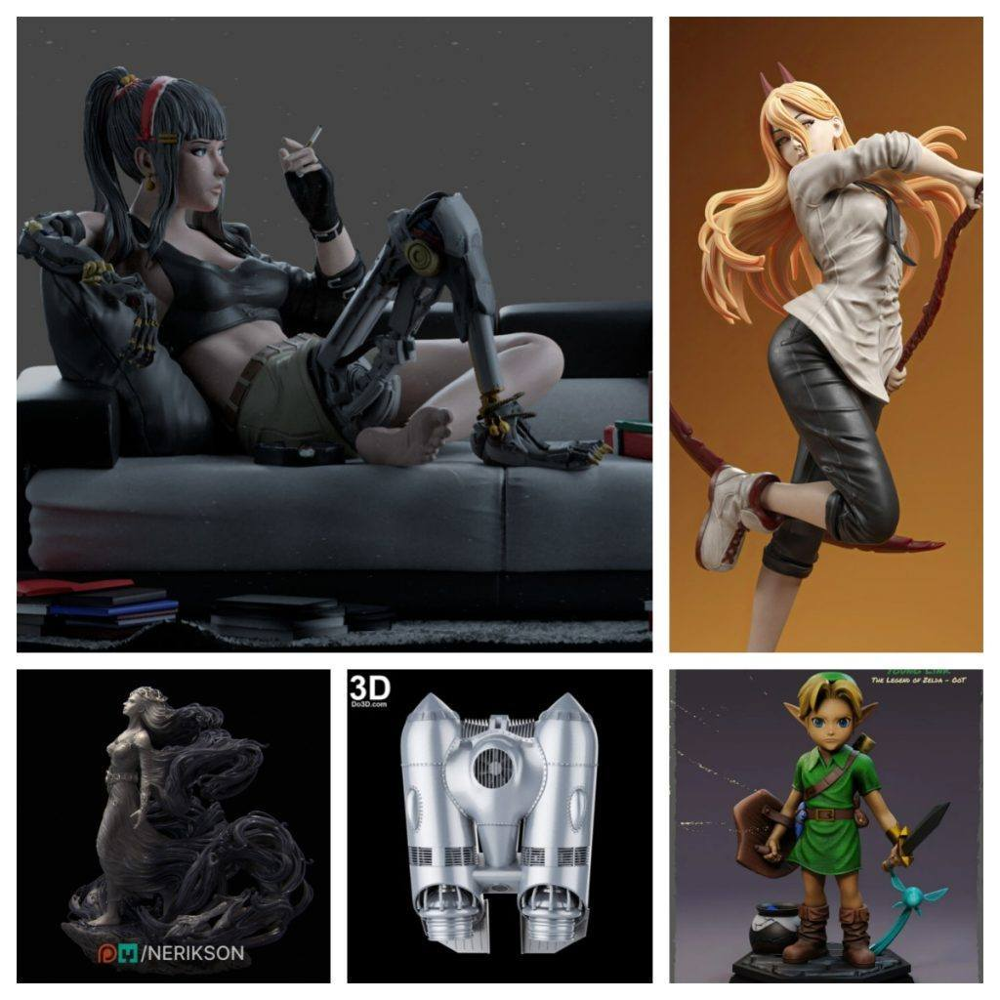
1.赛博女孩，一个带人物场景模型，机械部分可以替换，场景中素材价值高。
链接：https://pan.baidu.com/s/18wgD2p-_unjiWDtuabJViA
提取码：x27r


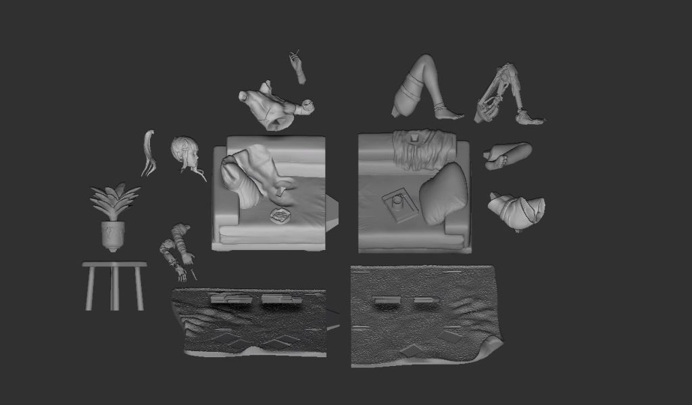
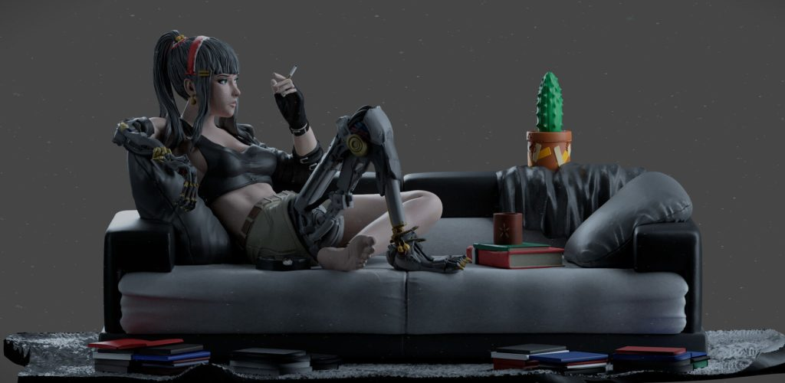
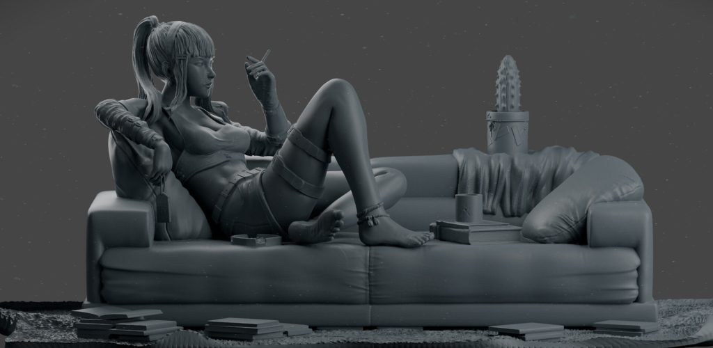
2.电锯人——帕瓦，不错的角色，可惜盒饭的早，一个动态不错又不会太违规的模型。
链接：https://pan.baidu.com/s/1YBcUqy28agOsmGzqhJu9Ew
提取码：wpsd


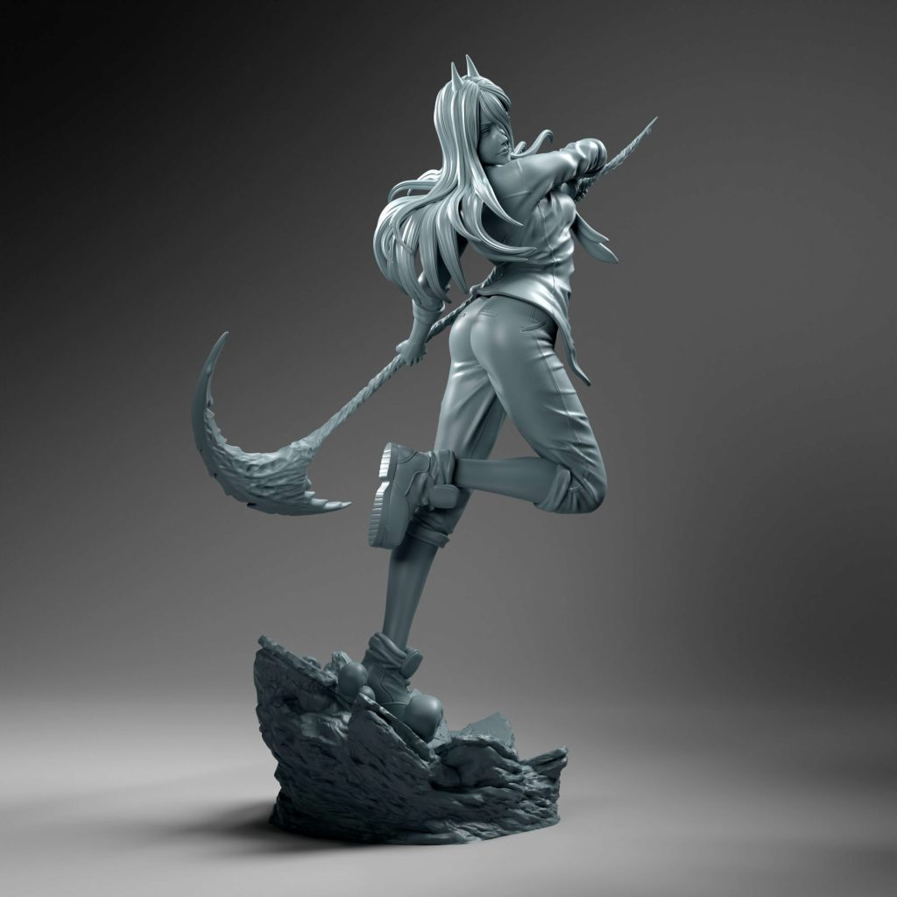
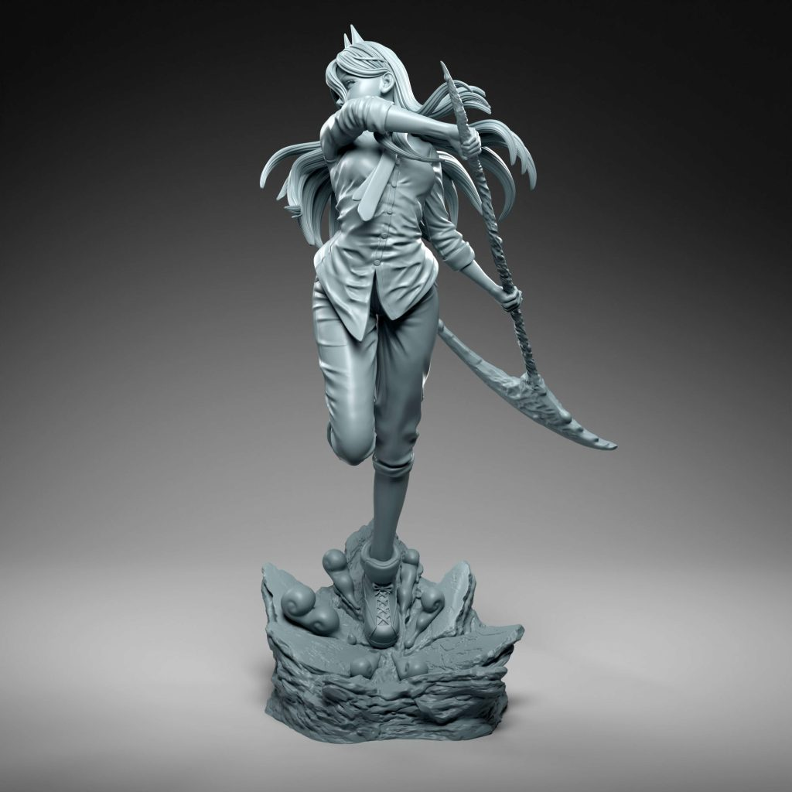
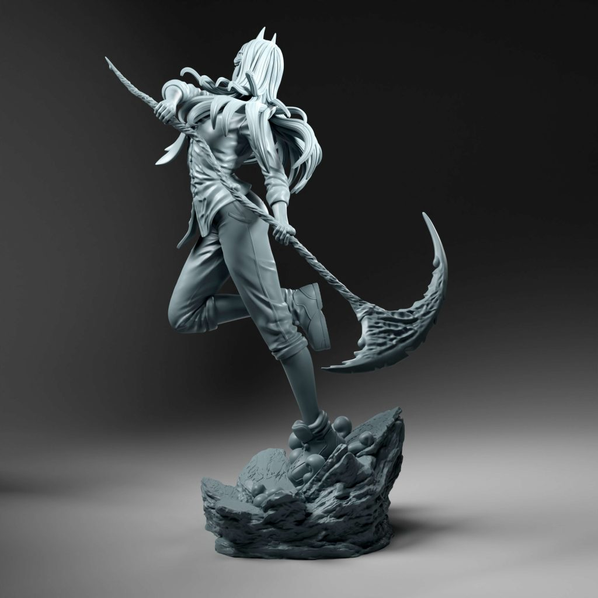
3.关于风和死亡的人物设计，非常艺术的造型，做浮雕会非常好看。
链接：https://pan.baidu.com/s/1-P1o6IlARf8fwhlYTXUPqw
提取码：ux4k
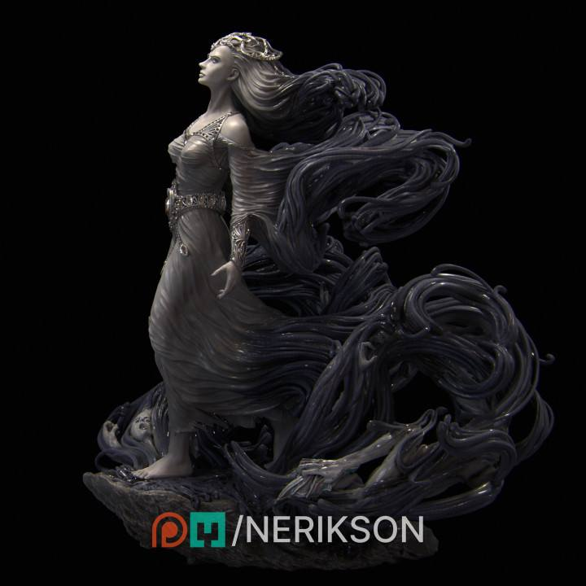
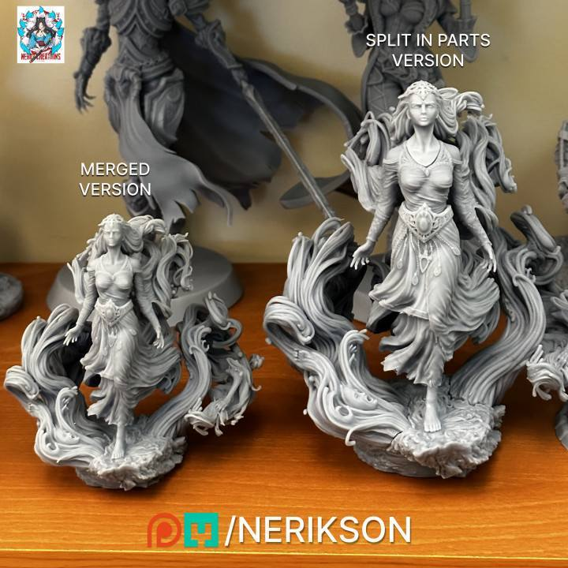
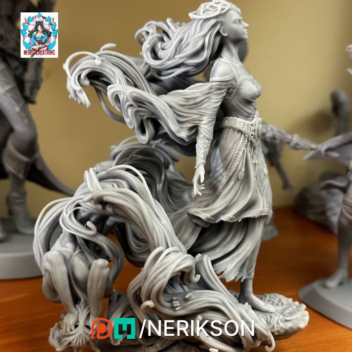
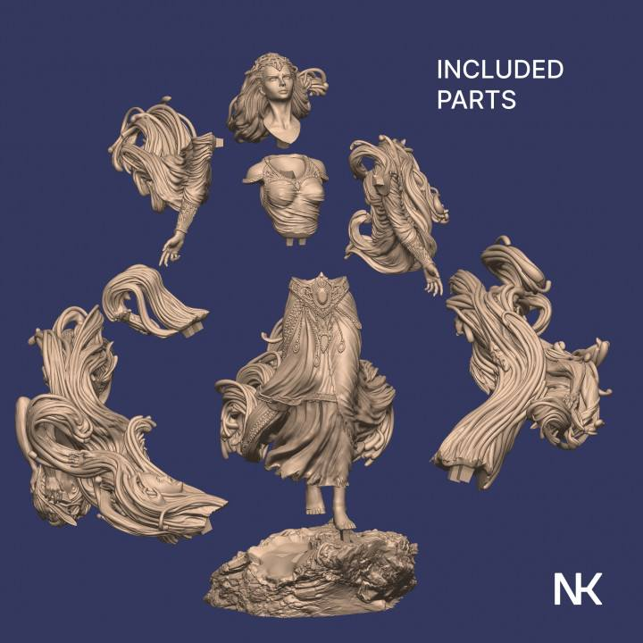
4.火箭喷气背包，分件比较细，素材可用。
链接：https://pan.baidu.com/s/1KX8diZGOSJ9k3Sy3-ZOhug
提取码：kky5

5.塞尔达的一个小林克，比较Q版，适合单独打印，素材能使用的有限。
链接：https://pan.baidu.com/s/10rNe2eL45QQA38iRKTbcyw
提取码：tdk9

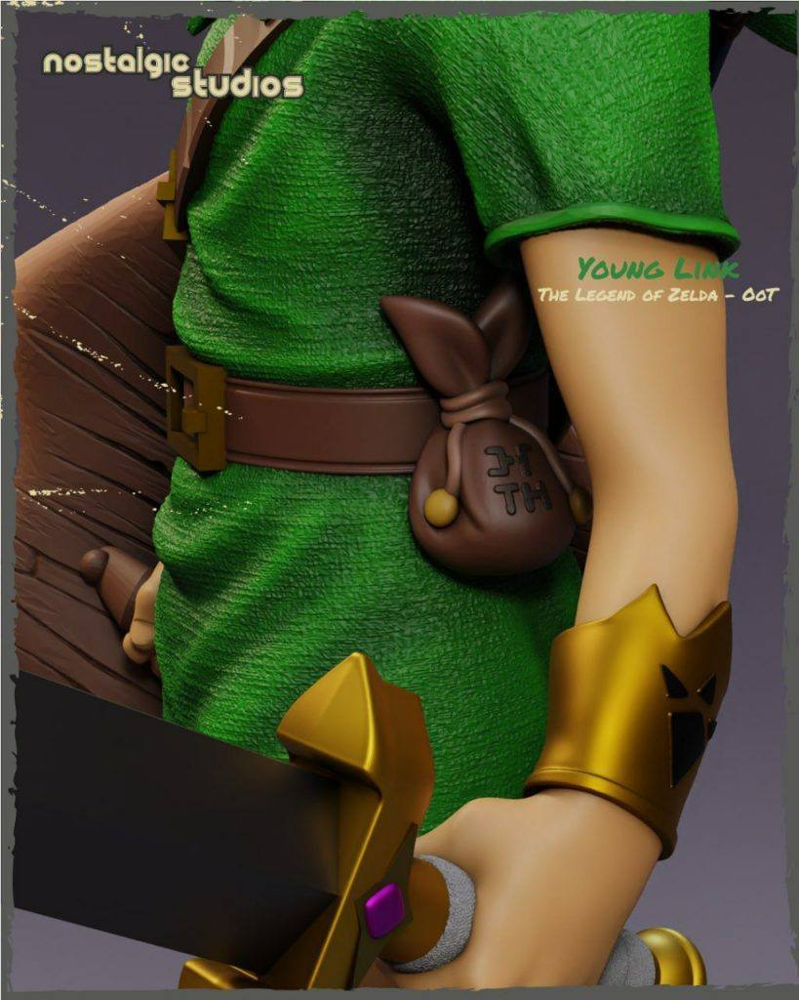
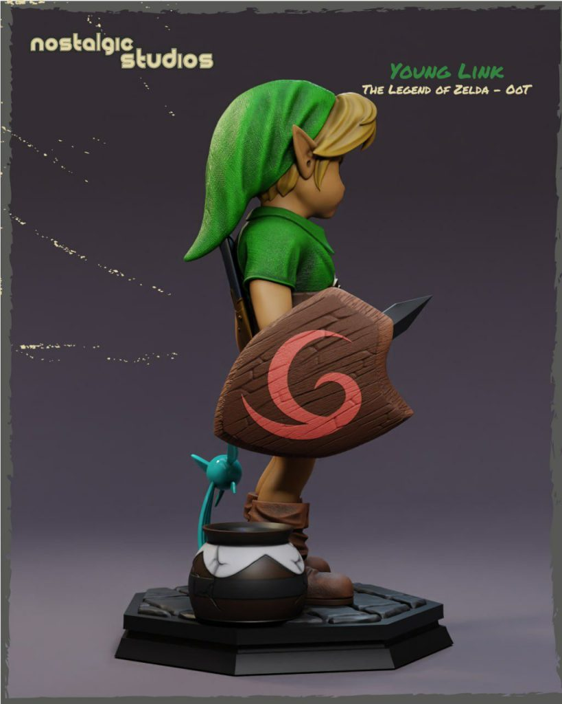
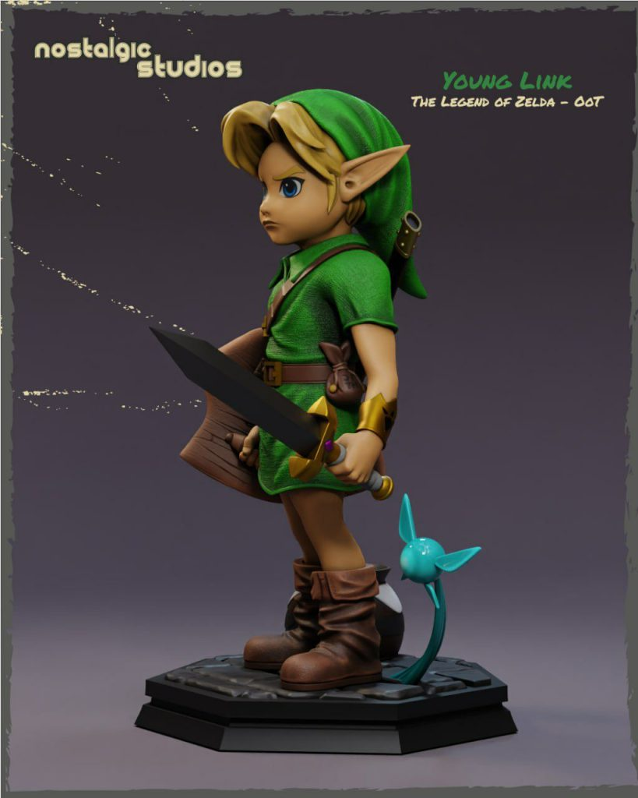
加群获得更多免费模型！